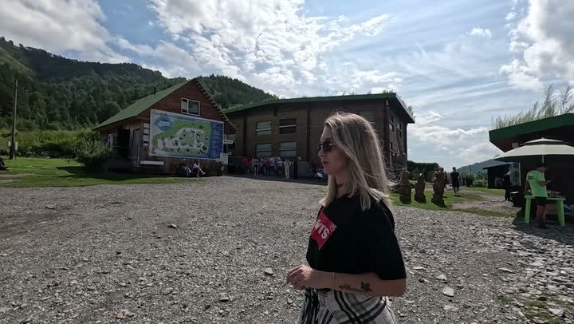
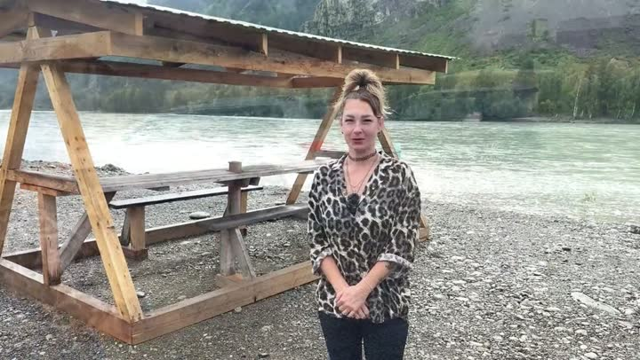
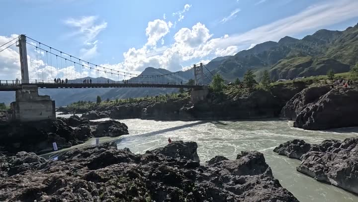
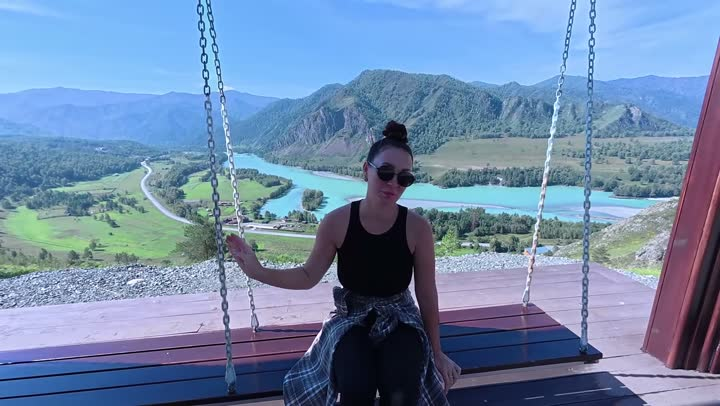
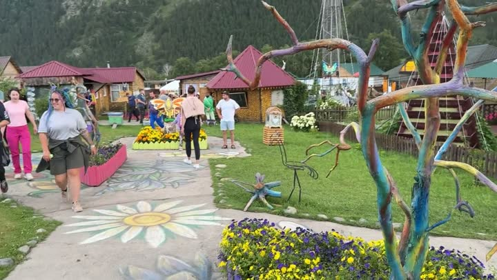
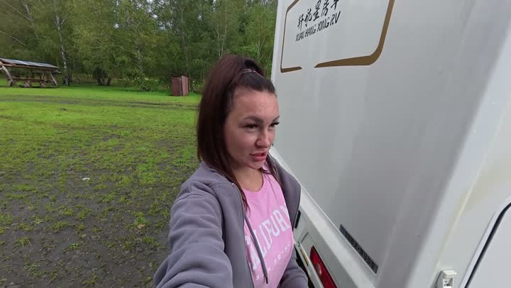
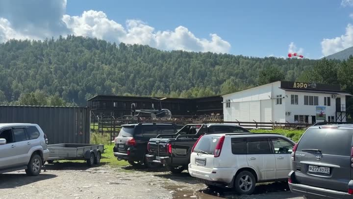
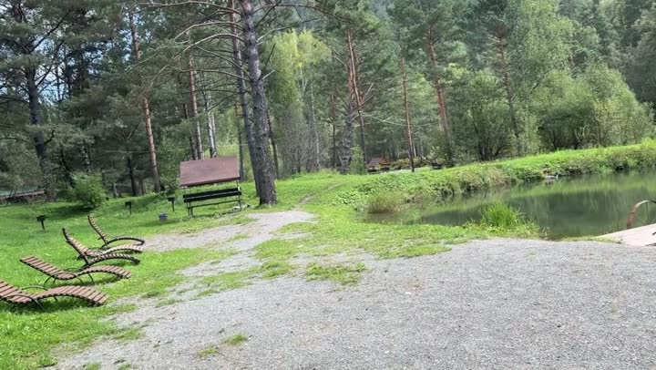
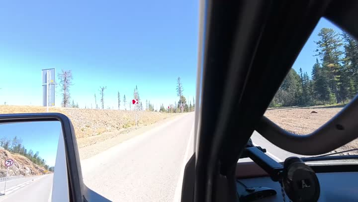
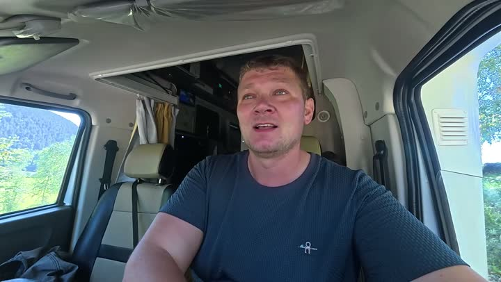

Атлас мест · Россия
Чемал — наши места
11 мест5 роликов11 советуем
Наш топ-10

Лохматая фермаферма с животными · 👍 Советуем · средне
Кемпинг У Петровича (Camping U Pyotrovicha, Gorny Altai)стоянка · 👍 Советуем · дёшево
Ороктойский мостдостопримечательность · 👍 Советуем
Смотровая Толгоёк и качели над Катуньюсмотровая · 👍 Советуем
Пасека №13магазин · 👍 Советуем
Кемпинг «У Петровича», Чемалстоянка · 👍 Советуем · средне
Парк отдыха «Форелевое озеро»парк и сад · 👍 Советуем · средне
Рыбалка «Живая рыба»парк развлечений · 👍 Советуем
Дорога к Каракольским озёрамприрода · 👍 Советуем
Скалы «Зубы дракона», Чемалприрода · 👍 СоветуемС детьми — 4
Красивые виды — 5
Бюджетно — 2
Все места — 11
Природа — 3
- Дорога к Каракольским озёрам 👍 Советуем
- Парк отдыха «Форелевое озеро» 👍 Советуем
- Скалы «Зубы дракона», Чемал 👍 Советуем
Стоянки и базы — 2
- Кемпинг «У Петровича», Чемал 👍 Советуем
- Кемпинг У Петровича (Camping U Pyotrovicha, Gorny Altai) 👍 Советуем
Животные — 1
- Лохматая ферма 👍 Советуем
Достопримечательности — 3
- Ороктойский мост 👍 Советуем
- Смотровая Толгоёк и качели над Катунью 👍 Советуем
- Чемальская ГЭС 👍 Советуем
Рынки и магазины — 1
- Пасека №13 👍 Советуем
Развлечения — 1
- Рыбалка «Живая рыба» 👍 Советуем
Атлас мест канала «Юля и Дима / БЕЗ ТОРМОЗОВ». Описания составлены по нашим роликам; цены — на момент съёмки. Нашли неточность — напишите нам в Telegram.